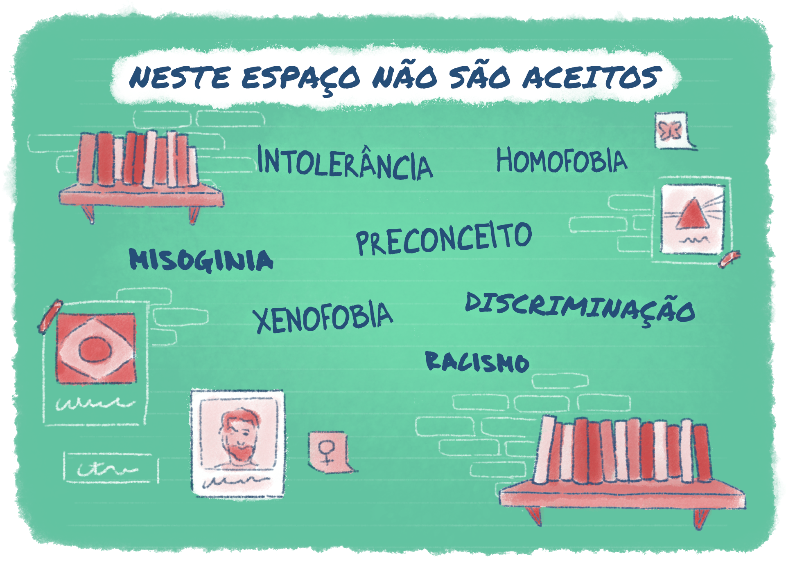
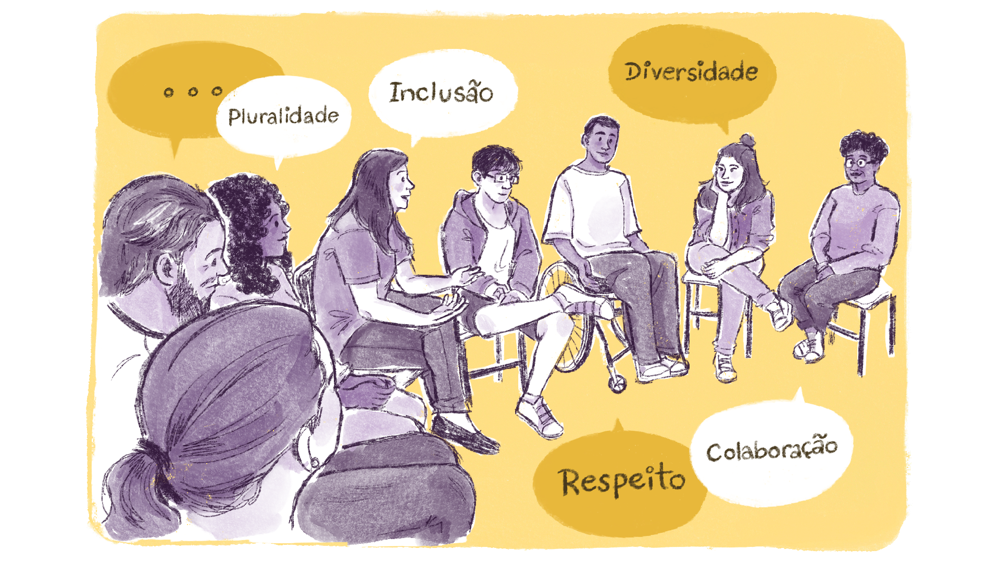

Diversidade e Inclusão como aspectos da Gestão Democrática
Outra potencialidade de democratização de acolhimento das diferenças e minorias é o exemplo dos núcleos que os campi, no caso da Rede Federal, podem incentivar: NEABI (Núcleo de Estudos Afro-Brasileiros e Indígenas), NUGEDIS (Núcleo de Gênero e Diversidade Sexual), entre outros. Esses espaços precisam ser compreendidos e incentivados como instâncias de acolhimento, treinamento e uma grande estratégia de formação cidadã, tanto no sentido de que as pessoas possam se sentir acolhidas e fortalecidas como na construção de um lugar de representatividade dentro da instituição.
Muitas vezes, o racismo, o preconceito, a misoginia, a discriminação e tantas outras formas culturais de opressão e totalitarismo precisam ser dirimidos e problematizados em lugares menores e de total confiança. Por exemplo, questões ligadas ao assédio de toda sorte e ao preconceito de religião ou raça são velados recorrentemente nos espaços formativos por falta de coragem e de espaço para manifestação. Quando os núcleos cumprem bem seu papel, podem ser ambientes para que inúmeras violências conceituais (e até mesmo físicas e psicológicas) possam ser avaliadas, analisadas, criticadas, pensadas e superadas coletivamente. Espaços seguros contra o preconceito podem ser criados e promovidos, como exemplificado na ilustração abaixo.

Título: Grêmio estudantil democrático
Fonte: Prosa (2024g).
Assim, é crucial que essas questões sejam priorizadas, incentivadas e compreendidas como espaço estratégico de formação cidadã. A instituição não pode delegar para essas ações fundamentais um servidor que não tenha identificação ou comprometimento com o tema. Não se trata de colocar um servidor que tenha baixa carga horária de trabalho para acompanhar essas atividades, é necessário que se escolha alguém que realmente compreenda, assuma e dinamize espaços de acolhimento e de militância política, com representatividade legítima desses pares e segmentos nas instâncias decisórias institucionais.
Sentido ético-político das representatividades
Paro (2010) mostra que também é importante a consideração de que devemos fazer a representatividade docente, que precisa estar devidamente envolvida nas demandas e necessidades da categoria, com suas devidas e legítimas representatividades. A dimensão ético-política da práxis docente deve ser estimulada com formação permanente e espaços de escuta. Sempre considerando que, independente do nível de ensino, a colegialidade é sempre o mais eficaz antídoto contra toda e qualquer forma de totalitarismo.
Cabe mencionar aqui a importância dos serviços terceirizados, que também precisam ser ouvidos e considerados. A estratégia de sintonia pode se dar pelos fiscais de contrato ou mesmo pelos coordenadores de setores, que devem manter vigilância sobre as condições de trabalho, sobre seus próprios direitos e deveres e, ainda, incluir na pauta das decisões institucionais a percepção, o entendimento e as demandas latentes daqueles que operam cotidianamente para o bom funcionamento da instituição.
Uma gestão verdadeiramente democrática, ainda mais na EPT, precisa exercitar o trabalho como princípio educativo em todos os seus setores e serviços, com todos os sujeitos que atuam para que a missão de servir à sociedade seja gradativamente mais eficiente.

Título: Construindo um ambiente seguro e colaborativo na escola
Fonte: Prosa (2024h).
Lembrando que, do ponto de vista político, a instituição possui um viés pedagógico, a gestão democrática é, portanto, um processo contínuo e árduo. Isso precisa ser dito porque muitos a compreendem como mero exercício privado e, usando a falácia do falso dilema, defendem que o gestor é democrático na medida em que atende todas as demandas individuais – mesmo que isso prejudique a coletividade. Entretanto, a questão é inversa: quem faz gestão não pode perder o horizonte e o compromisso com o propósito institucional, o sentido e a natureza da atividade-fim.
Markoff (2013) argumenta que gestão não é para fazer ou obter favores, mas para cuidar, zelar e exercitar o compromisso com o bem comum e com a missão institucional, que vai além do interesse imediato dos servidores. Isso não significa que devemos estar sob o jugo de uma tirania coletivista, mas, se primarmos pelo bem-estar somente de alguns, teremos o que Aristóteles denominou como oligarquia, e não gestão democrática.
No sentido pedagógico, é importante que os cursos de diferentes níveis de ensino possam criar a sua representatividade através de um Núcleo Pedagógico Integrado (NPI), para que todos os cursos tenham suas demandas minimamente atendidas e também para que a instituição não se distancie da sua atividade-fim. Em suma, a colegialidade em todas as suas expressões e significados deve considerar todos os seus segmentos e categorias com o compromisso fiel ao propósito maior e último da instituição. As representações docentes, discentes, da sociedade civil organizada, dos trabalhadores terceirizados, dos técnicos em assuntos educacionais, entre outros coletivos, devem estar alinhadas ao sentido último da EPT, ou seja, devem pautar não apenas suas demandas específicas e latentes, mas ampliar suas reflexões e pautas para serem reconhecidos e considerados nos espaços decisórios sem que haja imposições antidemocráticas de nenhuma ordem (Tenório, 1998; 2006).
Como a gestão democrática é uma atitude e um processo (e não um produto ou algo pronto), as controvérsias, os diálogos, as discussões, as reuniões, as assembleias e os momentos formativos devem ser um hábito, colocados como a prioridade maior da instituição. Não se chega à excelência sem o exercício constante da virtude, sem muito trabalho, sem o gosto pelo exercício constante do dissenso e da controvérsia. A práxis democrática não é algo automático. Cotidianamente, haverá interesses diversos dispostos no tabuleiro, tensionamentos de toda sorte, demandas de todos os tipos e vontades alinhadas com muitas formas diferentes de necessidades, mas quem se dispõe a gerir esses processos deve primeiro ancorar suas escolhas na legalidade, na transparência e na ética. Havendo qualquer desvio nas escolhas ou tomadas de decisão, desalinhadas com a isonomia, a impessoalidade e a profissionalização dos processos e serviços, a gestão não será mais autodeterminada, correndo um sério risco de ser refém de suas escolhas. Gestão democrática na EPT não é para promover o bem-estar de determinado setor ou deste ou daquele servidor, mas para planejar coletivamente como a entrega de nossa finalidade pode ser cada vez mais autônoma, qualificada, pública, transparente e respeitável.
Não se trata de negarmos a individualidade como, no adágio autoritário que o próprio Mussolini, fundador e líder do fascismo italiano, apregoava: “tudo no Estado, nada contra o Estado” (Payne, 1996, p. 73). Ou como J. Kennedy, presidente norte-americano, postulava: “não pergunte o que seu país deve fazer por você, mas o que você pode fazer pelo seu país” (The American Presidency Project, 1961). Na acepção de Mussolini, temos a clara negação dos indivíduos em favor do líder e do institucional, e a isso chamamos de fascismo. Com relação ao pressuposto de Kennedy, se negarmos a individualidade em virtude da ideia de nação ou de todo, estamos negando o sentido e a possibilidade da democracia.
Dito de outro modo, nas visões totalitárias – sejam de direita ou de esquerda –, o problema epistemológico chama nossa atenção para não reduzir um líder a algo meramente político; precisamos considerar que ele é, também, a figura expoente de uma corrente de pensamento. Tal ideia pode acarretar a tentação de acharmos que o rei, ou o líder, ou o papa etc., é a representação mais perfeita do exercício de poder. Entretanto, pior que um mau gestor é o endeusamento deste mau gestor como algo necessário e insubstituível, como se a realidade não pudesse ser vista por um outro ângulo ou de outra forma. Não à toa temos em exercício de poder, em várias partes do mundo, muitos megalomaníacos e seus asseclas , que tratam o poder não como possibilidade, mas como determinação. Não de modo dialético, mas como uma experiência faraônica em que há um processo ou modo de sacralização daquele que exerce o poder, como se nem humano fosse.
O poder é sempre uma possibilidade. Daí que superamos a visão antiga que vinculava a pessoa do rei ou do papa ao poder, como se fossem a mesma coisa. Hoje, temos elementos suficientes e necessários para pensarmos formas e regimes democráticos que superem a visão dual de que uns nasceram para mandar e outros nasceram para obedecer (Machado, 2023).
Para refletir: democracia, diversidade e inclusão
Considerando o que estudamos até agora a respeito da democracia, da inclusão e da diversidade, convidamos você a ler as perguntas abaixo e a refletir a respeito delas, se possível, relacionando-as ao seu contexto de atuação. Essas reflexões ajudarão você a construir o seu Memorial.
A) Qual é o papel da representatividade na construção da democracia?
B) Quais são as ações que podemos promover para evitar os totalitarismos em nossas unidades de ensino?
C) Como prevenir que as instâncias democráticas se tornem autoritárias?